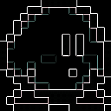

Personal Projects
Convolution Algorithm & Image Processor
A convolution algorithm and image processor written in C. Applies either a box blur, gaussian blur, or edge-detection.
> GitHub Repository
>>>

[Image]